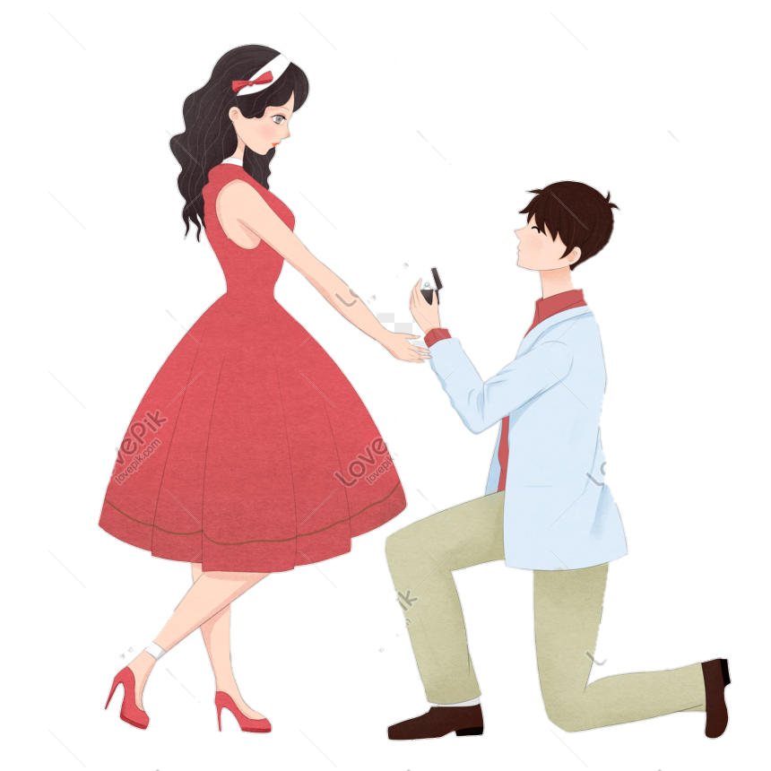

Đi đâu mà vội mà vàng
Mà vấp phải thính, mà quàng phải anh
Tưởng chừng thính chỉ đôi hôm
Ngờ đâu ngó lại thính tròn bốn năm,...

Hành trình yêu
-
- M nghĩ sao nếu t tỏ tình m,..
- Humm
- M làm ny t nhá,….
- Ừ ny thì ny!
** Thế là anh đã bị gài!Ngày 27 tháng 9 năm 2017 -

- Ta là gì của nhau?
- Là ny đó!
** Tới hôm nay anh mới biết anh đã có em,…Ngày 29 tháng 9 năm 2017 -
Chúc mày valentine vui vẻ! Công sức mấy ngày liền của t đó giữ cho cẩn thận. Có tao rồi thì yên phận đi. Hack nick giờ. ~ Thương ~
Ngày 14 tháng 2 năm 2018 -

Hôm nay, chúng ta bước khỏi ngưỡng cửa của THCS. Cùng nhau bước tới ngôi trường mới với bao la thử thách!
** Nhìn tấm ảnh nhớ được gì thì nhớ nha!Ngày 22 tháng 5 năm 2018 -

Từ ngày hôm đó, anh đã thành công trong cuộc cách mạng thay đổi cách xưng hô. Anh đố em nhớ đó là ngày nhiêu ák???
Ngày ... tháng ... năm 201X -

Năm đầu của THPT, bắt đầu bước vào những khó khăn và thử thách, với môi trường mới, anh và em đã thay đổi rất nhiều, nhưng cuối cùng ta vẫn biết mình là ai và đối phương là gì!
Niên khóa 2018-2019 -

Năm hai của THPT, bắt đầu bắt kịp nhịp điệu của môi trường sống, ta đã tập cách ăn chơi nhiều hơn bằng việc tìm hiểu những nơi đi chơi mới, những quán ăn mới và tiến sâu hơn trong cơn nghiện food và những kì quan bí ẩn,….
Niên khóa 2019 -2020 -
Thời khắc thay đổi cuộc đơi anh, với những thành công đầu tiên, anh cảm ơn em luôn đồng hành cùng anh, cùng chia sẻ niềm vui, khó khăn. Đỏ tình thì đen bạc, thật may cho anh khi lúc này anh có cả hai.
Cuối 2020 -

Tưởng chừng cuối cấp là thời gian khủng hoảng của cuộc chiến bài vở và gánh nặng của tình yêu, đã bao anh hùng đi trước phải để lai mối tình dang dở trong cuộc chiến đẫm nước mắt này,… Thế nhưng, chắc do may mắn mà anh và em lại vượt qua nó một cách dễ dàng,…
Niên khóa 2020-2021 -

Tất nhiên nếu khi nói đến chặn đường của yêu thương, thì không thể thiếu những chuyến đi chơi, những món quà ngày lễ, những cảm xúc khi yêu,…Mấy này nhiều lắm, tự nhớ với hồi tưởng đi nha, kể ra chắc đọc cả tháng!!!
2017-2021 -
Sắp tới, khi bước vào cánh cửa đại học, anh hy vọng rằng chúng ta sẽ vững tin và vững bước, cùng nắm tay nhau thật chặt để vượt qua mọi thứ và tiến đền thành công!
2021-2025 -

Tất nhiên, hành trình của tình yêu anh không muốn dừng ở đây, anh nghĩ em cũng nghĩ thế. Thế nên, anh muốn chúng ta sẽ đi với nhau lâu hơn để bổ sung hành trình này dài, hay và ý nghĩa hơn nữa,….
FUTURE
Lời nhắn nhủ
Cảm ơn em vì đã cho đồng hành cùng anh, cùng anh vượt qua những hoàn cảnh khó khăn cũng như những cảm giỗ.
Tất nhiên các cuộc cãi nhau là không thể thiếu, nhưng hơn hết mỗi khi cãi ta đều biết đối phương quan trọng với mình đến mức nào.
Chúng ta đã trao cho nhau thứ được gọi là thanh xuân và thời gian, nó không hề ít. Tuy nhiên, anh hy vọng chúng ta sẽ không làm những điều đó lãng phí điều đó.
Anh vẫn luôn nghĩ rằng:
MÌNH KHỒNG ĐƯỢC HỐI HẬN VỚI NHỮNG THỨ MÌNH ĐÃ CHỌN
NHỮNG ĐIỀU KHÔNG HỐI HẬN THÌ HÃY LÀM HẾT MÌNH VỚI NÓ!

{kind=link}
{kind=link}
{kind=link}
{kind=link}
{kind=link}
{kind=link}
{kind=link}
{kind=link}
{kind=link}